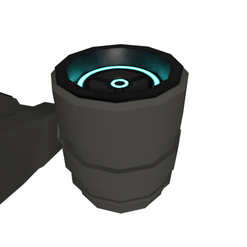
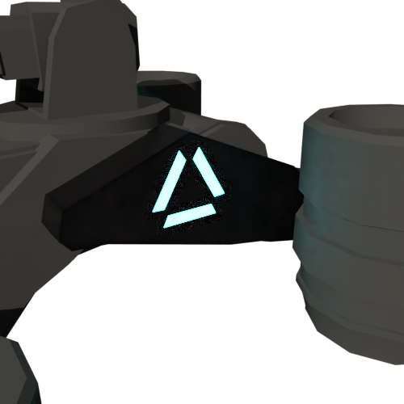

GAMMA QUAD UPGRADE GUIDE
Your Gamma Quad can be upgraded at any service station on Xenon Moon. Upgrades are available for purchase at the cost of components or tokens. Only a limited number of upgrades can be deployed to your Gamma Quad.
Class 1 upgrades are the cheapest, have mostly positive effects, and consume the lease amount of upgrade space.
Class 2 upgrades are the most even in terms of cost, effects, and the amount of upgrade space consumed.
Class 3 upgrades are expensive, have dramatic effects, and consume the most amount of upgrade space.
THRUSTER UPGRADES
Ablative Pulse Plasma Thrusters
Increased Speed
The ablative pulse plasma thruster modification provides a positive increase to the Gamma Quad's acceleration and speed. This comes with a small cost to manoeuvrability, but still an ideal upgrade for any Gamma Quad.
Multistage Plasma Thrusters
Increased Speed
Multistage thrusters offer a substantial increase in speed. Ideal for any scout or escort Gamma Quad build, multistage plasma thrusters produce small decreases in vertical boost, and manoeuvrability. For extra responsive throttle and top speed, multistage thrusters are highly recommended.
Funnelled Ion Repeater Thrusters
Increased Speed
Funnelled ion repeaters provide the ultimate speed increase for Gamma Quad vehicles. In conjunction with any plasma thruster upgrade, and the Gamma Quad's acceleration and top speed is dramatically improved. While Ion Repeaters are renowned for additional speed, the upgrade adds weight, reduces turning speed, and consumes more power, which results in a slightly less fuel-efficient build.
WEAPON SYSTEM UPGRADES
Super Charged Laser Distributor
Increased Weapon Damage
Supercharging the primary weapons distributor produces a substantial increase in projectile damage and projectile speed. This small upgrade is ideal for dealing extra laser damage to targets with minimal drawbacks to the Gamma Quad’s overall vehicle performance.
Turbo Charged Laser Distributor
Increased Weapon Spread
Turbo charged weapons distributors harness substantial kinetic energy, and the resulting laser discharge is spread over a much wider angle. This increased laser output is ideal for military operations, but also comes at a reduced fire rate, and an increase in vehicle weight.
Dual Rectifier Laser Distributor
Increased Weapon Damage
The dual rectifier weapons system modification is a complete overhaul of the primary firing chamber. With increased charge capacity, and a more stable firing chamber, the Gamma Quad can unleash devastating volleys of laser fire. This modification comes with significant extra weight, and a greatly reduced fire rate.
WEAPON COOLING UPGRADES
Reinforced Firing Chamber
Increased Weapon Fire Speed
The reinforced firing chamber reduces vibrations and kinetic heat build-up from the Gamma Quad’s primary weapon. This greatly helps improve the firing chamber’s rate of fire while only slightly reducing the weapon’s projectile damage. The reinforced chamber is a popular choice for Gamma Quad vehicles supporting in assault operations.
Laser Recoil Dampener
Increased Weapon Efficiency
Laser recoil dampeners improve the overall efficiency of the Gamma Quad’s weapon capacitor and firing mechanism. With reduced heat and recoil the primary weapon uses far less energy and provides a positive reduction in the amount of fuel consumed when firing.
Ablative Laser Heat Sinks
Increased Weapon Fire Speed & Efficiency
With ablative heat sinks, the Gamma Quad’s primary weapon runs substantially cooler. Safety protocols are offset and the primary weapon’s rate of fire is greatly increased. The ablative heat sink upgrade is one of the most popular choices among heavy combat pilots. The heat sinks reduce overall projectile damage, and add extra weight resulting in reduced speed, and slower turning rates.
STEERING ASSEMBLY UPGRADES
Improvised Shock Mounts
Increased Turn Speed
Improvised shock mounts address a fundamental limitation in the Gamma Quad's thruster housing design and greatly improves manoeuvrability. The improvised shock mounts are the perfect addition to any Gamma Quad that needs to be more agile out in the field.
Reinforced Constant-Velocity Joints
Increased Turn Speed
Reinforced CV joints greatly improve the speed with which thrusters can rotate and change angle. This modification greatly improves the responsiveness of the Gamma Quad’s steering, and ability to tackle difficult terrain as well out-maneuverer enemy combatants.
Light-Weight Struts
Increased Turn Speed
The lightweight strut modification offers a substantial refitting of the undercarriage and thruster housing. The Gamma Quad’s steering assembly benefits greatly, and the turning speed is dramatically improved. This modification does however come with the draw back of less speed, more weight, and reduced vertical boost capacity.
HULL UPGRADES
Heavy Duty Hull Reinforcements
Increased Hull Strength
Heavy duty hull reinforcements add an extra layer of protection to the Gamma Quad's chassis and thrusters making it more damage resistant. The extra hull adds more weight to the Gamma Quad and reduces acceleration.
Deflective Armour System
Increased Hull Strength
The deflective armour system provides greater protection around the Gamma Quad's key modules and power plant. This upgrade is ideal for combat operations and comes at the expense of speed, turn rate and vertical boost capacity.
Double Layer Armour Plating
Increased Hull Strength
Double layer armour plating offers the largest increase to the Gamma Quad's hull strength. For combat focussed builds this upgrade offers the greatest increase in damage resistance. However this upgrades comes with a substantial increase in weight, reduced speed and manoeuvrability as well as diminished vertical boost strength.
VERTICAL BOOSTER UPGRADES
Expanded Booster Capacitor
Increased Vertical Boost
By expanding the vertical boost capacitor, the Gamma Quad enjoys improved hovering stability as well as improved vertical thrust performance. This modification only slightly decreases speed and turn rate.
Compact Gauss Coil Mechanism
Increased Vertical Boost
The compact gauss booster adds a small set of acceleration coils to the Gamma Quad's rear thrusters. This upgrade is ideal for heavy Gamma Quads that struggle to maintain vertical hovering stability. This vertical thruster improvement comes with a reduction in speed and manoeuvrability.
Heavy Gauss Coil Booster
Increased Vertical Boost
The heavy gauss coil booster provides the best possible vertical stability for the Gamma Quad chassis. Applied to the top funnel of the rear thrusters, the gauss coil helps keep heavy of builds off the ground, no matter the terrain.
CORE SYSTEM UPGRADES
Lightweight Chassis
Increased Upgrade Capacity
Specialised lightweight materials are used to replace the majority of the internal chassis frame of the Gamma Quad resulting in extra space for more upgrade modifications.
Vacuum Storage Compartments
Increased Storage Capacity
Vacuum storage compartments greatly increase how many of each mineral and component the Gamma Quad can store.
Carbon Nanotube Core Internals
Increased Fuel Capacity
For long-range expeditions and long distance scouting operations, carbon nanotube core internals greatly improve fuel distribution and efficiency. The nanotube core modification is popular among exploration and recon variations of the Gamma Quad.